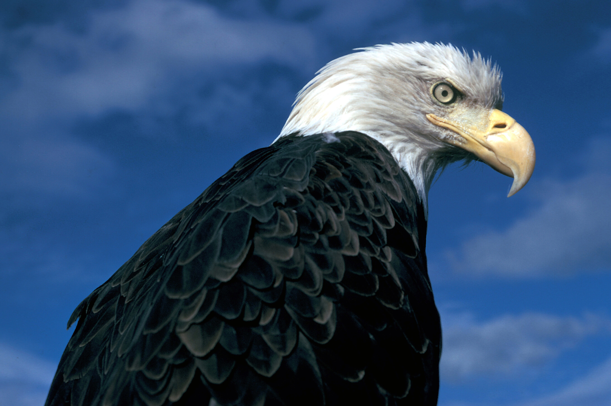
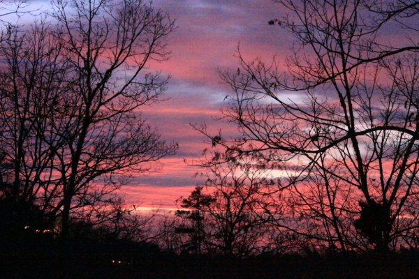
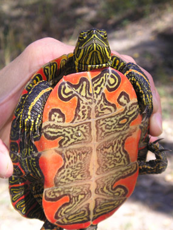

| Glacier National Park is one of the largest national parks in the lower 48 states and is one of the most beautiful of America's national parks. Native Americans referred to the park as the "Shinning Mountain" and the "Backbone of the World". The park is home to over seventy species of mammals including the wolverine, grizzly bear, and lynx. Over 260 species of birds visit or reside in the park. | |
 Many people, when they think of Glacier, think of the grizzly bear or the brown bear. Glacier contains one of the remaining grizzly bear populations in the lower 48 states. the park however , is home to over 60 species of other animals, including elk, gray wolf, wolverine, cougar, mountain goat, and bighorn sheep, to name a few. The lynx and grizzly are threatened species, while the gray wolf is endangered. |
 |
| A park visitor also can find a number of amphibians -- some quite unusual. the tailed frog, for instance, is named for the male's inside-out reproductive opening. This is the only frog in the North American that fertilizes the female's eggs internally. | |
Glacier Park's cold winter is not an invitation to many reptiles. However, three species of reptiles live in the park. The Western painted turtle is one of the favorite reptiles of many visitors. Their bottom shell has bright yellow and orange markings, and the skins is streaked with yellow. They can be basking in the sun on logs around low elevation lakes.  |
 The park is open 24 hours a day year round |